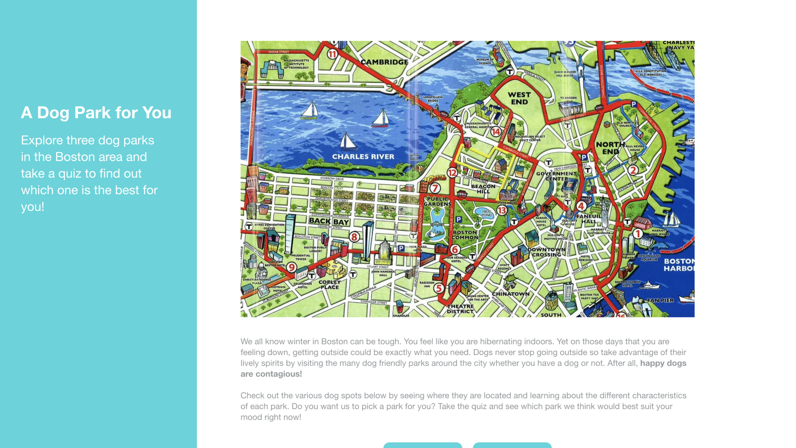
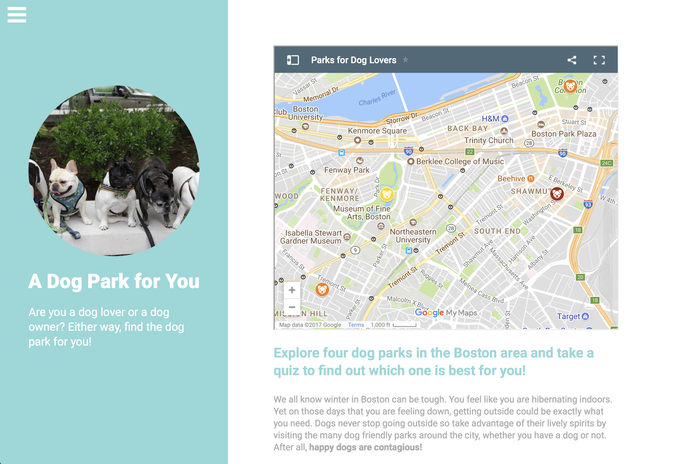

For our final 5D Fundamental project, we decided to make a website that could help Boston residents and students find the perfect dog park to visit at that moment. We wanted to do this through a personality quiz, the results would be used for us to suggest the park. We then had to figure out which parks to include, we wanted to make sure there were parks all across the city and that each park had a different feeling.
With our basic idea and information ready, we prototyped our website with Adobe XD. We showed this prototype to our class and asked for feedback about the idea, the information, and looked at how they interacted with what we presented them with. This gave us great feedback to consider when making the actual website. View our prototype here.

A screen capture of our prototype site.
With the feedback we better developed the content, focused on the interactive elements, and changed a few factors in the design. An example of a change we made would be on the "Our Parks" page. Users said it was too copy heavy and said they would prefer shorter, bullet-point like information. Users also wanted to see the park on that page as well. This was great feedback as we might have never thought of making these changes.
One of the challenges of this project was creating the quiz. While I considered myself proficient in HTML and CSS, Javascript is something that I barely knew. After several internet tutorials and help from my peers, I was able to get a quiz that functioned pretty closely to how I wanted it to.
If you would like to check out our quiz, head on over here! This project solidified how helpful and basically necessary user testing and feedback is. The feedback we received in the beginning really helped us refine our project.

A screen capture from the home page of our
website